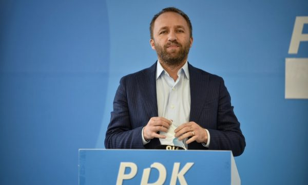
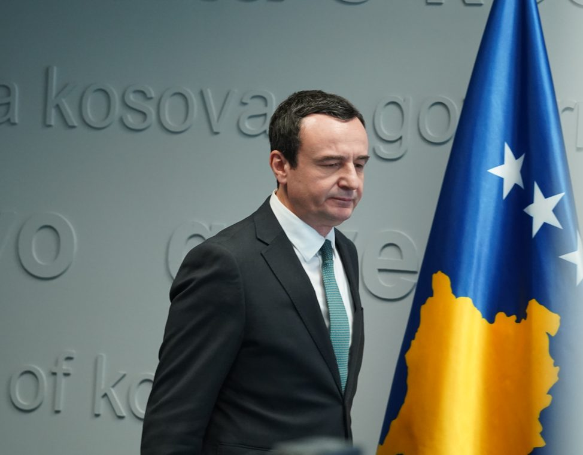
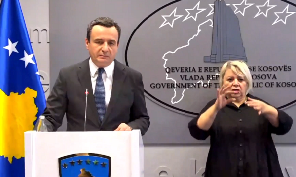
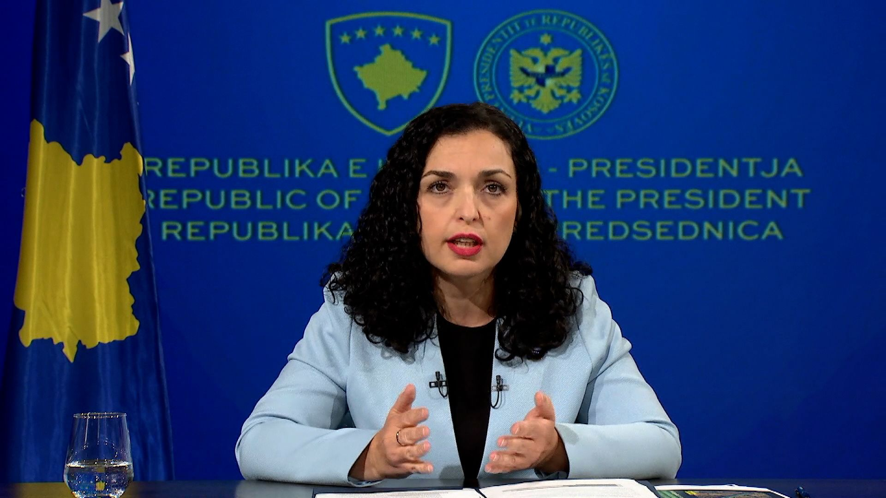

Tahiri: Kurti po ankohet për Radoiçiqin, por e la të ikte derisa e
përcillte me dron në kohë reale
Deputeti i PDK-së, Abelard Tahiri, ka komentuar konferencën e sotme për media të kryeministrit
Albin Kurti dhe vartësit të tij, Xhelal Sveçla, të cilën e thirrën për të treguar se Kosova
është në rrezik nga sulmet e reja të Serbisë.
Tahiri tha se ndonëse Kuti po ankohet për terroristin, Milan Radoiçiq, i cili kishte organizuar
sulmin e Banjskës nga ku mbeti i vrarë polici Afrim Bunjaku, ai e ka lënë të lirë më 24 shtator
që të ikte drejt Serbisë.
Lexo Edhe:
“Albin Kurti vazhdon të ankohet për Radojçiqin, por ende nuk e ka sqaruar për publikun përse e
la të lirë Radojçiqin më 24 shtator në Banjskë. Përmes dronit të institucioneve të sigurisë,
kryeministri i ka përcjellë në kohë reale lëvizjet e Radojçiqit. Megjithatë, ai dhe banda e tij
u lejuan të iknin dhe sot paraqesin rrezik serioz për sigurinë e Kosovës”.
Sipas Tahirit, në një anë, “Albin Kurti vazhdon të manipulojë me sentimentin patriotik, kurse në
anën tjetër i lejoi korridor tërheqjeje Radojçiqit, pasi ishte koordinuar me të muaj më parë
përmes shefes së grupit të tij parlamentar”.

Vdes Ambasadori Kornblum i cili bëri historinë duke hapur zyrën e
parë të SHBA-së në Kosovë
Vdes Ambasadori Kornblum i cili bëri historinë duke hapur zyrën e parë të SHBA-së në Kosovë
Ambasada e Kosovës në Washington ka njoftuar për vdekjen e ambasadorit amerikan John Kornblum, i
cili kishte bërë hapjen e parë të zyrës së SHBA-së në Kosovë më 5 qershor 1996, vendim ky
historik në një moment historik në mbështetjen amerikane për Kosovën.
Ambasada e Kosovës ka shprehur ngushëllime për vdekjen e Kornblum duke rikujtuar punën e
palodhshme të tij për lirinë, demokracinë dhe raportet transatlantike.
Lexo Edhe:
“Me pikëllim dëgjuam për ndarjen nga jeta të ambasadorit John C. Kornblum, një gjigant i vërtetë
në historinë diplomatike.
Ngushëllimet tona të përzemërta shkojnë për familjen dhe miqtë e tij. Hapja historike e zyrës së
parë diplomatike të SHBA-së në Kosovë nga Ambasadorja Kornblum më 5 qershor 1996, shënoi një
moment historik në mbështetjen e palëkundur amerikane për kauzën tonë.
Përkushtimi i tij i palodhshëm për lirinë, demokracinë dhe marrëdhëniet transatlantike, i
shtrirë mbi 40 vjet, përfaqëson një trashëgimi që do të vazhdojë të jetojë.
Kurti: Nëse Asociacioni është çështje e brendshme e Kosovës, paskemi
humbur kohë, s'kam thënë se do ta shkruaj draftin
Kurti: Nëse Asociacioni është çështje e brendshme e Kosovës, paskemi humbur kohë, s’kam thënë se
do ta shkruaj draftin
Kryeministri Albin Kurti ka komentuar sërish një deklaratë të emisarit Miroslav Lajçak në një
intervistë për Gazetën Express, i cili tha se çështja e Asociacionit është çështje e brendshme e
Kosovës dhe se për këtë s’duhet që Serbia të nënshkruajë marrëveshje me Kosovën.
Kurti tha se kjo deklaratë e tij është “regjistër tjetër i gjërave” dhe insiston se tjetër gjë
ka ndodhur në Bruksel.
Lexo Edhe:
“Në bisedimet e Brukselit vazhdimisht është thënë që për një draft-statut duhet të ketë
marrëveshje Kosovë-Serbi dhe është sjellë në tryezën e dialogut. Më 2 maj kam dëgjuar me durim
ish-deputeten e SNS-së, Daniela Vujeçiq, udhëheqëse e të ashtuquajturit Ekip Menaxhues, duke e
laboruar gjysmë ore se si duhet të duket Republika Serbe në Kosovë. Ka pasë shumë trysni mbi
qeverinë që edhe ne të propozojmë një draft, ndërsa drafti i saj s’ishte zhvlerësuar nga
ndërmjetësi”.
Kurti ka thënë se ka qenë shumë legjitime ngritja e kësaj çështje në Bruksel nga presidenti i
Serbisë, Aleksandar Vuçiq.
“Paraprakisht kur ngritej nga presidenti i Serbisë çështja e Asociacionit dhe një gjë e tillë,
një ngritje e tillë e temës konsiderohej legjitime nga ndërmjetësit unë pata ofruar më 18 mars,
që në tri parime, të paraqesin principet mbi të cilit unë nënshkruaj draftin. Patën thënë se
është e papranueshme për Serbinë dhe rrjedhimisht çështja pat ngecur”.
Kurti tha se pas deklaratës së fundit të Lajçakut tashmë i bie që është humbur kohë kot duke e
diskutuar një çështje të brendshme të Kosovës në Bruksel.
“Dhe tash nëse draft-statuti i asociacionit prej ndërmjetësit thuhet se është një çështje e
brendshme e Kosovës ky është regjistër tjetër i gjërave. Me fjalë tjera, ne paskemi humbur kohë
sa herë është ngritur Asociacioni në tryezën e dialogut në Bruksel. Por, unë s’e kam ngritur
asnjëherë, tjetërkush e ka bërë atë. Kjo i bie që koha në Bruksel për draftin për Asociacionin
gjatë këtyre dy viteve paska qenë e panevojshme si temë, rrjedhimisht e humbur si kohë. Kjo
është arsyeja pse thashë që nëse është një çështje ekskluzivisht e Kosovës, plotësisht dakord,
atëherë Kosova për çështje të brendshme jo vetëm që ka Qeveri, por edhe ministra përkatës. Unë
s’kam thënë se do ta shkruaj, por kam thënë se mund ta shkruaj draftin dhe kam treguar se cilët
janë ministrat e mi se kush janë ata”.

Kurti: Radojiçiq po riorganizohet për sulm në Kosovë në ambientet e
firmës “Jablanovica” në Rashkë
Kurti: S’dua luftë, s’dua t’iu bartet gjeneratave të reja, lë të kryhet kjo punë me mua,
Xhelalin dhe Vuçiqin
Kryeministri Albin Kurti është pyetur në konferencë për media se çfarë është duke bërë Kosova
për t’i ruajtur kufijtë pas alarmimeve të bëra se Radojiçiq po përgatit sulme të reja në Kosovë.
Kurti ka thënë se Policia e Kosovës është duke patrulluar bashkë me KFOR-in dhe sipas Kurtit kjo
ka bërë që të zmbrapsen nga planet për sulm të radhës në Kosovë, shkruan Gazeta Express.
Ai ka falënderuar edhe AKI-në duke thënë se është duke treguar një sukses të jashtëzakonshëm dhe
ka potencuar se kur AKI-së i shtohet edhe bashkëpunimi me aleatët, atëherë sipas Kurtit, Kosova
është e gatshme për t’i zmbrapsur suksesshëm kushdo që mendon të sulmojë Kosovën, shkruan
Express.

Osmani e Kurti kërkojnë heqjen e masave ndëshkuese: Ka tendencë të
keqpërdoren për ta kushtëzuar Kosovën
Osmani e Kurti kërkojnë heqjen e masave ndëshkuese: Ka tendencë të keqpërdoren për ta kushtëzuar
Kosovën
Udhëheqësit e Kosovës i bënë thirrje të premten Bashkimit Evropian që të heq masat ndëshkuese
ndaj saj dhe të ndëshkojë Serbinë për siç thanë veprime armiqësore ndaj Kosovës dhe largim nga
marrëveshja për normalizimin e marrëdhënieve ndërmjet të dyja vendeve.
Presidentja e Kosovës, Vjosa Osmani, tha se masat e vendosura nga Bashkimi Evropian pas
tensioneve të muajit maj ishin të padrejta dhe Kosova tashmë ka plotësuar të gjitha kushtet për
largimin e tyre.

Bislimin pyetet për kthimin e Trump në Shtëpinë e Bardhë: Grenell
mund të bëjë dëm, por SHBA është partneri ynë më i fuqishëm
Bislimin pyetet për kthimin e Trump në Shtëpinë e Bardhë: Grenell mund të bëjë dëm, por SHBA
është partneri ynë më i fuqishëm
Zëvendëskryeministri Besnik Bislimi ka thënë sot se nuk ka shqetësim në rast se Donald Trump i
fiton zgjedhjet në SHBA.
Në një intervistë për “Euractiv”, Bislimi tha se qasja ndaj Kosovës nuk varët nga preferencat e
individëve, por se është e ngulitur në historinë e SHBA-ve.